Séance 6 - L’évolution des magmas I : migration et différenciation
Plan du cours
| Temps | Contenu | Objectif |
|---|---|---|
| 0-40 min | La migration et le stockage des magmas | Intégrer les différentes échelles et modes de transport et de stockage des magmas |
| 40-45 min | Questions générales | |
| 45-60 min | Pause | |
| 60-100 min | L’évolution géochimique des magmas | Comprendre les différents processus d’évolution des magmas |
| 100-105 min | Questions générales |
Du magma primaire au magma différencié
Les premières gouttes de magma formées sont dites primaires ou primitives.
- Éléments traces : leurs concentrations varient selon la nature de la source et le taux de fusion, notamment pour les éléments incompatibles.
- Éléments majeurs : la composition est souvent mafique ou basique (SiO₂ < 50 % ; voir le diagramme TAS).
Les roches magmatiques observées sur Terre ne présentent généralement pas une composition primitive. Toute une série de processus modifie cette composition initiale et produit des roches magmatiques de natures différentes. On parle de différenciation magmatique.
- Les éléments traces, les terres rares (REE) et les rapports isotopiques sont utiles pour contraindre les sources magmatiques (cf. séances 4 & 5).
- Les éléments majeurs sont davantage affectés par la différenciation et sont donc particulièrement utiles pour étudier l’évolution des magmas.
Migration du magma : du réseau poreux au réseau de transport
Comment un liquide produit en profondeur peut-il se déplacer à travers le manteau et la croûte ?
Le transport des magmas dépend de :
- La perméabilité du milieu encaissant
- La capacité du milieu encaissant à se déformer ou à se fracturer (comportement ductile ou fragile)
- La flottabilité (rapport de densité entre le milieu encaissant et le magma)
- La viscosité du magma
| Échelle | Structure dominante | Processus principal |
|---|---|---|
| micromètres à millimètres | joints de grains et pores | percolation |
| centimètres à mètres | veines | canalisation locale |
| mètres à kilomètres | diapirs, dykes et sills | propagation régionale |
| kilomètres | réservoirs et mushs | stockage et différenciation |
Quelques concepts clés : perméabilité d’un milieu
Définition
La perméabilité est la capacité d’un milieu poreux (ici, une roche du manteau ou de la croûte) à laisser circuler un fluide (ici le magma) sous l’effet d’un gradient de pression. La flottabilité (contraste de densité) contribue à la force motrice, tandis que la viscosité du fluide s’oppose à l’écoulement.
Application aux roches du manteau et de la croûte
- Manteau : les roches sont généralement compactes et très peu poreuses. Le magma peut néanmoins circuler le long des joints de grains lorsque le liquide forme un réseau interconnecté.
- Croûte : les roches cristallines ont également une faible porosité primaire ; le magma circule surtout dans des fractures, des failles et des filons qu’il peut ouvrir ou réactiver.
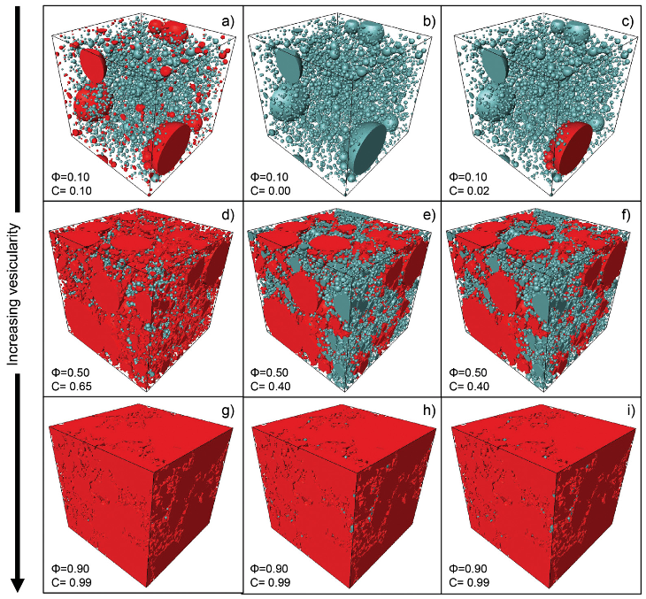
Quelques concepts clés : matériau ductile vs. fragile
Définition
En géologie et en rhéologie, la ductilité et la fragilité décrivent la manière dont une roche se déforme sous contrainte.
Comportement ductile : déformation permanente sans fracturation, par fluage à l’échelle cristalline. Ce comportement est favorisé par les températures élevées de la croûte inférieure et du manteau ; il permet notamment la convection et le diapirisme.
Comportement fragile : accumulation d’énergie élastique, puis rupture soudaine. Il domine dans les niveaux froids et superficiels de la croûte et de la lithosphère mantellique, où il forme des failles et peut provoquer des séismes.
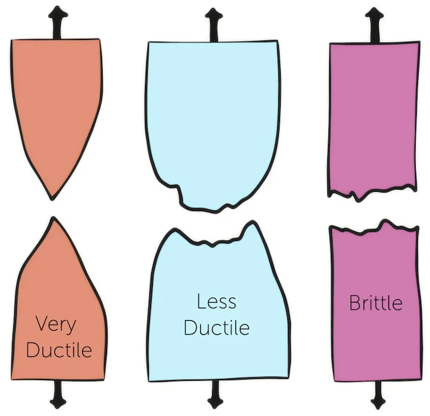
Quelques concepts clés : viscosité d’un matériau
Définition
La viscosité mesure la résistance interne d’un fluide à l’écoulement. Pour un magma, elle contrôle la facilité avec laquelle le liquide, et plus largement le mélange liquide-cristaux-bulles, peut se déformer.
La viscosité est une propriété clé des magmas car elle contrôle la capacité à migrer et à se différencier, et gouverne le style des éruptions volcaniques (cf. séances 11 & 12).
Elle diminue lorsque la température augmente.
Elle augmente avec la teneur en silice et avec la proportion de cristaux.
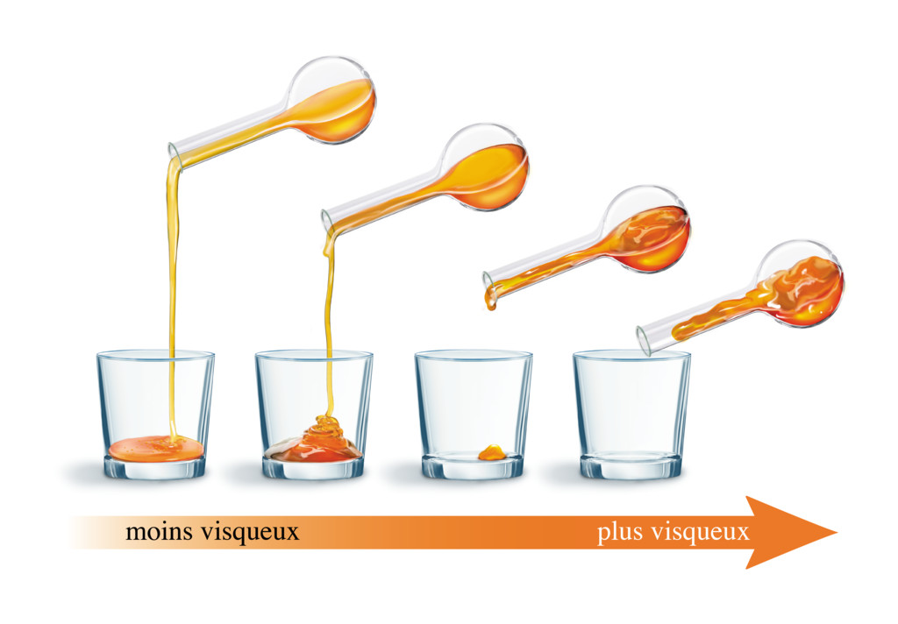
Quelques concepts clés : flottabilité et contraste de densité
Force motrice
La flottabilité dépend du contraste entre la densité de l’encaissant et celle du magma :
\[\Delta\rho = \rho_{\text{encaissant}} - \rho_{\text{magma}}\]
Si \(\Delta\rho > 0\), le magma possède une tendance à remonter.
La flottabilité et l’efficacité de la remontée du magma peuvent néanmoins être freinées par :
- la viscosité du magma
- l’imperméabilité du milieu encaissant

Percolation du liquide magmatique entre les grains : processus à la source
Un liquide entre les cristaux
- Après la fusion partielle, le liquide magmatique occupe les joints entre les grains cristallins du manteau ou de la croûte.
- La production de liquide ne garantit pas son extraction.
- Le liquide s’écoule dans un réseau poreux sous l’effet d’un gradient de pression.
- La flottabilité peut favoriser son déplacement vers le haut.
- La compaction du résidu peut expulser le liquide.
- La perméabilité augmente fortement lorsque la fraction de liquide devient connectée.
- Une déformation localisée peut concentrer le liquide dans des veines.

Percolation du liquide magmatique entre les grains : processus à la source
Le liquide peut rester piégé dans des poches ou former un réseau connecté, selon ce que l’on appelle l’angle dièdre \(\theta\). L’angle dièdre \(\theta\) décrit la géométrie du liquide à l’intersection de trois joints de grains.
| Géométrie idéale | Conséquence sur la migration |
|---|---|
| \(\theta < 60^\circ\) | le liquide peut former un réseau interconnecté à faible fraction fondue |
| \(\theta > 60^\circ\) | le liquide tend à former des poches isolées ; une fraction critique est nécessaire pour connecter le réseau |
La tension interfaciale contrôle la forme du liquide, tandis que la viscosité contrôle la vitesse à laquelle il se déplace. Ces deux propriétés ne jouent pas le même rôle.

Diapirisme : une remontée convective de matériel dans un milieu ductile (manteau)
Définition
Un diapir est une masse moins dense qui remonte en déformant progressivement un encaissant suffisamment ductile.
- La flottabilité est la force motrice.
- La vitesse de remontée dépend de la viscosité effective du magma et de celle de l’encaissant.
- Le processus est lent et implique une déformation continue du milieu environnant.
Le diapirisme convient aux milieux ductiles. Une croûte froide et cassante favorise davantage la fracturation et la propagation de filons.
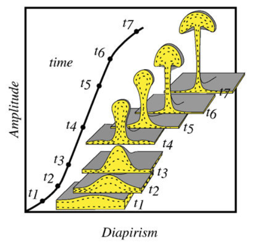
Exemple de mise en place d’un diapir magmatique
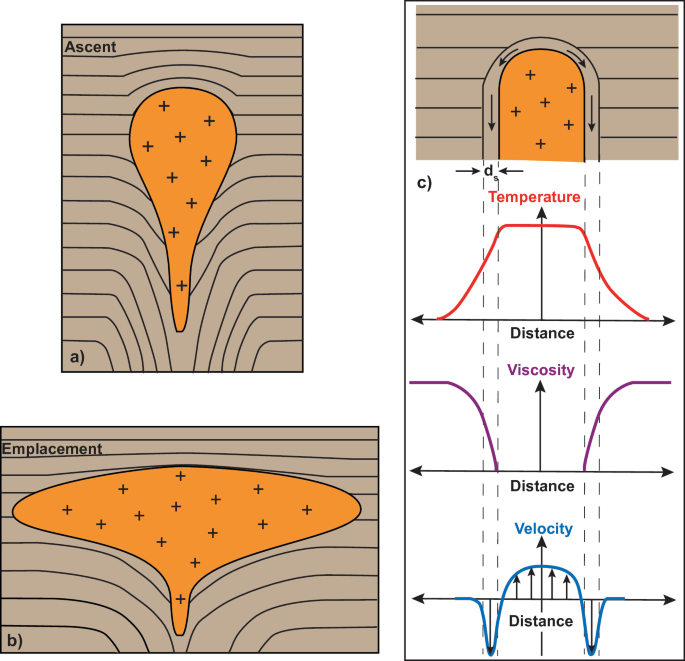
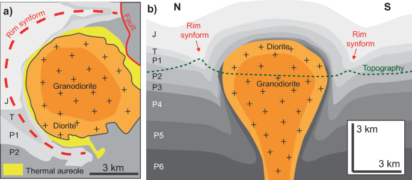
Les intrusions magmatiques dans la croûte fragile
Définition
Les intrusions magmatiques se forment lorsque le magma se met en place et se solidifie sous la surface (formant ainsi les roches plutoniques, cf. séance 8). Leur géométrie dépend de la pression magmatique, de la viscosité du magma et des structures ou contrastes mécaniques de l’encaissant.
Principales géométries
- Dyke : intrusion tabulaire qui recoupe les structures de l’encaissant (discordant)
- Sill : intrusion tabulaire qui se met en place parallèlement aux structures de l’encaissant (concordant)
- Laccolithe : intrusion concordante de moyenne taille pouvant déformer les roches environnantes.
- Pluton ou batholite : masse intrusive de grande taille, souvent irrégulière, formée par l’assemblage de plusieurs intrusions.
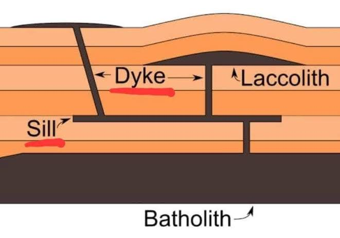
Pluton ou batholithe
Définition
Un batholithe est un vaste ensemble de roches plutoniques formé par l’assemblage de plusieurs intrusions successives en profondeur.
- Il présente généralement une composition intermédiaire à felsique, souvent granitoïdique.
- Sa mise en place est fréquente dans les zones de convergence, au-dessus des zones de subduction.
- Les magmas s’injectent progressivement dans la croûte et cristallisent au sein d’un système de réservoirs et de plutons.
- L’érosion des roches sus-jacentes peut finalement mettre le batholithe à l’affleurement, formant des massifs plutoniques de tailles variées.

Laccolithe
Définition
Un laccolithe est une intrusion concordante qui s’injecte entre les couches de l’encaissant et les déforme en formant un bombement vers le haut.
- Sa base est généralement subhorizontale, tandis que son toit est convexe.
- Il se forme lorsque la pression du magma soulève progressivement les couches sus-jacentes.
- Les laccolithes sont souvent constitués de magmas relativement visqueux, de composition intermédiaire à felsique.
- L’érosion peut supprimer les couches situées au-dessus et révéler la forme du laccolithe.
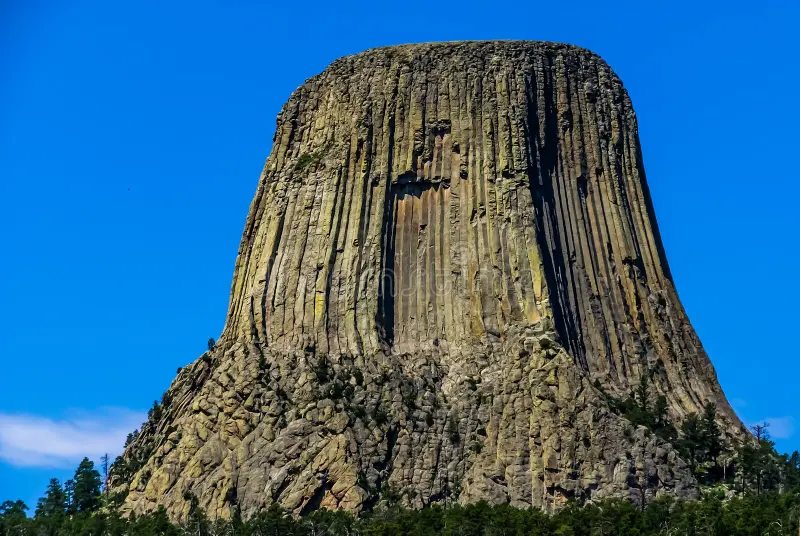
Termes génériques : réservoirs, mushs et chambres magmatiques
Les batholites et les laccolithes sont des structures de stockage où les magmas peuvent stagner et évoluer. Ils peuvent refroidir et cristalliser en roches plutoniques, ou poursuivre leur migration vers la surface et alimenter d’autres intrusions ou des édifices volcaniques (cf. séances 8 à 12).
Les termes « réservoirs » ou « chambres magmatiques » sont généralement utilisés, mais ils ne désignent pas nécessairement une grande cavité remplie de liquide. Cela peut être :
- un réservoir riche en cristaux, appelé mush
- un réseau connecté de sills et de dykes
- une zone de stockage temporaire alimentée par plusieurs injections
- un volume où liquide, cristaux et bulles coexistent en proportions variables
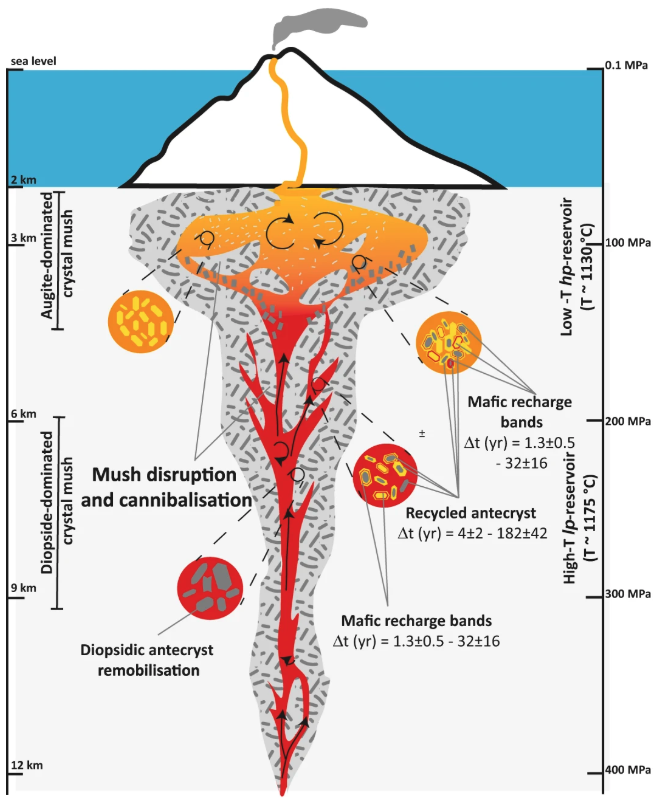
Transport par fracturation : Dyke (discordant)
Définition et mécanismes
- intrusions tabulaires qui recoupent les structures de l’encaissant
- ouverture et propagation d’une fracture sous l’effet de la pression magmatique
- transport souvent rapide vers des niveaux crustaux moins profonds
- orientation contrôlée par le champ de contraintes et les hétérogénéités mécaniques
- du fait de leurs faibles épaisseurs, les dykes refroidissent généralement rapidement, surtout sur leurs marges, créant des hétérogénéités de textures au sein des roches formées
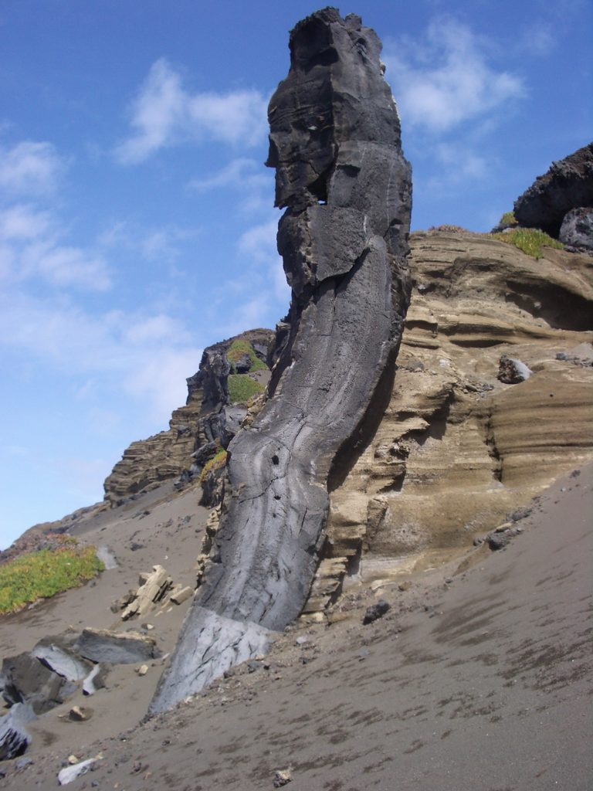
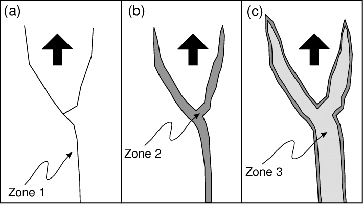
Transport par fracturation : Sill (concordant)
Définition et mécanismes
- Intrusions tabulaires généralement parallèles aux structures de l’encaissant
- Propagation latérale le long d’une interface mécanique ou d’un niveau faible
- formation favorisée lorsque la remontée verticale devient difficile et que la flottabilité devient neutre
- du fait de leurs faibles épaisseurs, les dykes refroidissent généralement rapidement, surtout sur leurs marges, créant des hétérogénéités de textures au sein des roches formées
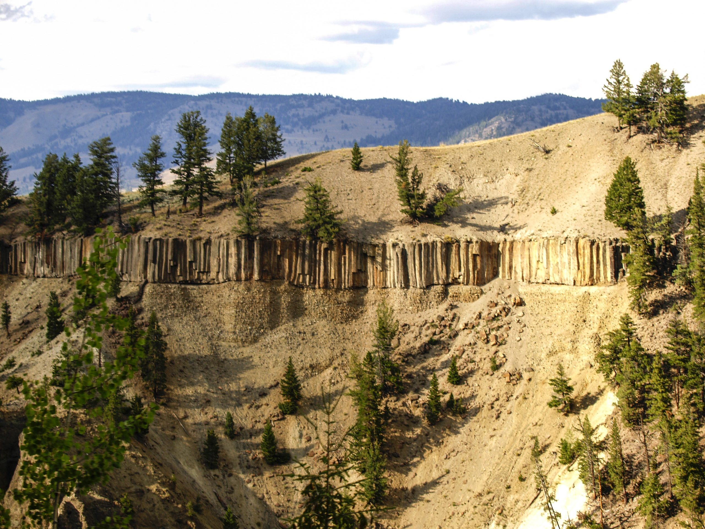
Transition dyke–sill
Une transition contrôlée par la profondeur et les contrastes mécaniques
- Un dyke se propage généralement de manière discordante lorsque la pression du magma et la flottabilité favorisent une remontée verticale.
- Lorsque le magma atteint une profondeur de flottabilité neutre ou une interface mécanique favorable, sa propagation peut devenir latérale : le dyke évolue alors en sill.
- À l’inverse, une injection dans un sill peut rouvrir une fracture et reprendre une propagation verticale, formant un dyke.
- La transition dyke–sill dépend donc de la densité du magma, de la pression, du champ de contraintes et de la structure de l’encaissant.
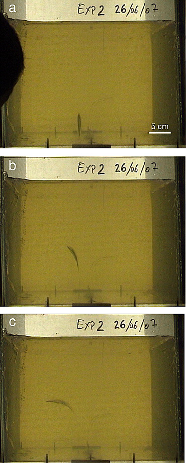
Le mélange des magmas
Deux magmas peuvent se rencontrer au sein d’un réservoir ou d’un conduit. Leur interaction dépend de leurs températures, de leurs compositions, donc de leurs viscosités.
Mingling
- dispersion mécanique incomplète de deux magmas
- conservation de domaines, d’enclaves, ou de filaments de composition différente
Mixing
- homogénéisation chimique plus avancée
- formation d’un liquide hybride
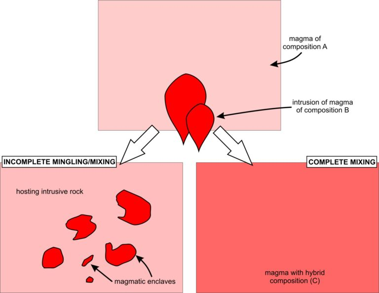
Mingling : les paramètres qui contrôlent la dispersion
Le mingling est d’autant plus efficace que les deux magmas peuvent se déformer ensemble.
- Contraste de viscosité : un contraste élevé localise la déformation dans le magma le moins visqueux.
- Température : le magma chaud peut réchauffer et fluidifier un magma plus froid, favorisant ainsi le passage vers du mixing.
- Fraction de cristaux : au-delà d’une fraction élevée, le magma forme un réseau rigide et se comporte comme une suspension dense ou un solide, favorisant ainsi la fracturation.
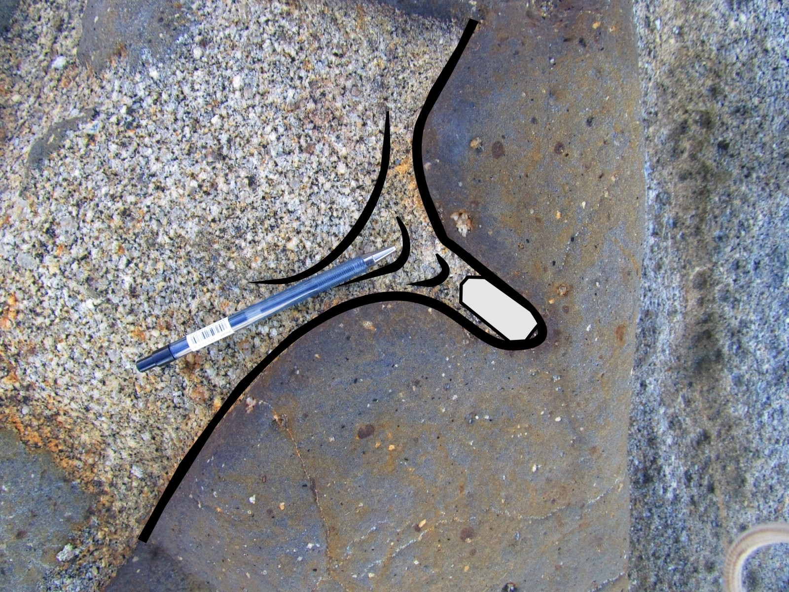
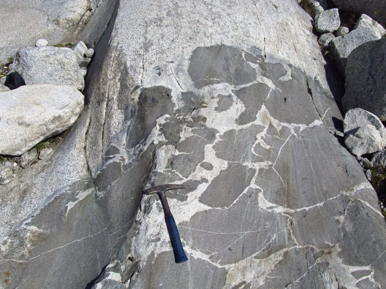
Mixing : de la dispersion à l’homogénéisation
Le mixing nécessite d’abord de créer une grande surface de contact entre les deux magmas, puis de réduire les gradients chimiques par diffusion, advection et déformation.
- Une viscosité comparable favorise la déformation des deux magmas.
- Un temps de résidence long favorise l’homogénéisation.
- Les cristaux et les bulles modifient la rhéologie et peuvent ralentir ou localiser le mélange.
- Le mélange complet reste rare dans les systèmes très visqueux ou très cristallins.
Un magma peut être fortement minglé sans être chimiquement homogène. Les textures et la géochimie doivent donc être interprétées ensemble.
Pour un élément considéré comme conservatif, qui ne réagit pas entre les deux magmas :
\[C_{\text{mélange}} = f C_A + (1-f) C_B\]
- \(C_A\) et \(C_B\) sont les concentrations dans les deux magmas parents ;
- \(f\) est la fraction massique du magma A ;
- \(1-f\) est la fraction massique du magma B.
Contamination et assimilation
Définition et mécanismes
Lors du transport et du stockage, les magmas expérimentent des échanges chimiques (contamination) et physiques (assimilation) avec les roches encaissantes. Ces échanges peuvent modifier les propriétés des magmas.
La contamination désigne la modification de la composition du magma par l’ajout d’une composante externe. Ce changement peut ainsi modifier les propriétés magmatiques et déclencher d’autres processus (changement de flottabilité induisant une migration forcée, changement de composition déclenchant une cristallisation, …).
L’assimilation désigne l’incorporation physique de matière provenant de l’encaissant. Cette matière peut ensuite contaminer plus ou moins le magma selon la nature des roches et le temps d’interaction.
Le modèle AFC (Assimilation and Fractional Crystallization) décrit une situation où le magma assimile une partie de l’encaissant pendant que des cristaux se séparent du liquide. Le liquide reçoit une composante issue de l’encaissant et perd simultanément de la matière par cristallisation. La composition finale dépend donc du rapport entre les taux d’assimilation et de cristallisation.
Cristallisation
Définitions et mécanismes
La cristallisation d’un magma peut le différencier sans apport externe. Cette cristallisation est provoquée par un changement des conditions P-T-X. Lorsque des cristaux se forment puis se séparent du liquide, la composition du liquide résiduel évolue progressivement, changeant ainsi progressivement les propriétés des magmas.
Le processus de cristallisation
Nucléation : correspond à la formation de germes cristallins stables.
Croissance : correspond à la croissance de ces germes.
- faible sous-refroidissement (juste sous le liquidus) : peu de nucléation, grande croissance (idéal pour former des phénocristaux)
- fort sous-refroidissement (largement sous le liquidus) : beaucoup de nucléation, croissance limitée (idéal pour former des microcristaux ou même du verre dans les cas extrêmes)
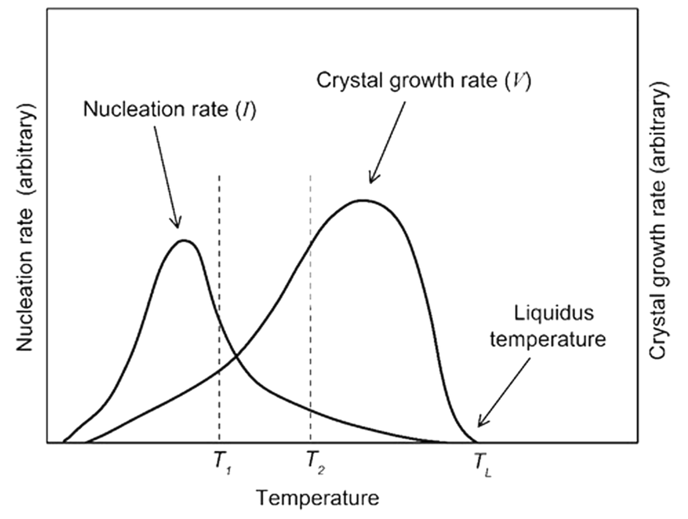
Cristallisation à l’équilibre ou cristallisation fractionnée ?
À l’équilibre
- les cristaux restent en contact avec le liquide
- les réactions solide-liquide peuvent se poursuivre dans un continuum
- la composition de chaque phase évolue vers l’équilibre
- le système conserve la mémoire de l’ensemble solide + liquide
État impossible ou rare dans la nature, car les cristaux formés sont dynamiques et se déplacent dans le liquide résiduel. De plus, la composition du liquide évolue, ce qui change les conditions initiales de cristallisation. La cristallisation à l’équilibre reste une approximation utile pour comprendre les réactions locales entre cristaux et liquide (d’où les diagrammes de phases).
Cristallisation fractionnée
- les cristaux sont séparés du liquide ;
- ils ne réagissent plus efficacement avec le liquide résiduel ;
- le liquide s’éloigne de la composition initiale ;
- la différenciation peut se poursuivre par étapes.
Situation naturelle envisagée pour l’ensemble des systèmes magmatiques.
La série réactionnelle de Bowen
La série de Bowen résume une tendance générale de cristallisation des magmas silicatés, principalement dans des systèmes avec une teneur en eau limitée à modérée et à pression donnée.
| Série discontinue | Série continue des plagioclases |
|---|---|
| olivine → pyroxène → amphibole → biotite | plagioclase calcique → plagioclase plus sodique |
À plus basse température, le feldspath potassique, la muscovite et le quartz peuvent apparaître dans les liquides suffisamment riches en silice et en alcalins.
Bowen est un modèle de tendance. La séquence réelle dépend de \(P\), \(T\), \(X\). Cependant, il résume et simplifie très bien le processus de cristallisation fractionnée et d’évolution des magmas.
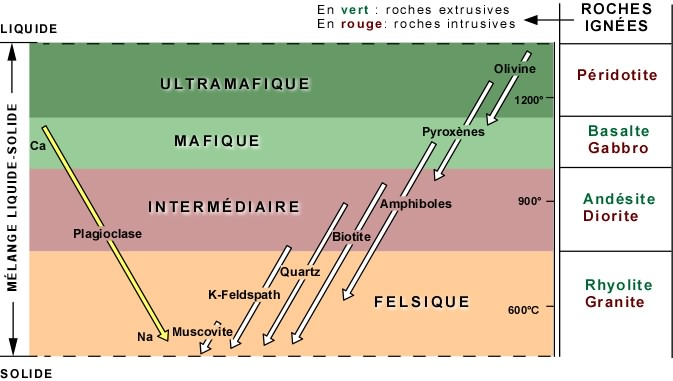
Curiosité importante : formation des inclusions vitreuses
Définition et mécanismes
Une inclusion vitreuse est une petite portion de liquide magmatique piégée dans un cristal pendant sa croissance.
- La fermeture progressive de l’inclusion l’isole du liquide environnant.
- Un refroidissement suffisamment rapide, ou une cristallisation empêchée, transforme le liquide piégé en verre.
- Les inclusions vitreuses peuvent conserver des informations sur la composition du magma au moment de la cristallisation et de la formation de l’inclusion. C’est donc une caractéristique très utile pour reconstituer l’histoire des magmas.
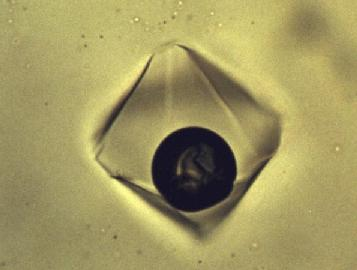
L’intrusion de Skaergaard : un laboratoire naturel
L’intrusion de Skaergaard, à l’est du Groenland, est un exemple classique de cristallisation fractionnée.
- Les cristaux se sont accumulés et ont formé une série stratifiée au cours du refroidissement.
- La compaction des couches cristallines a contribué à séparer le liquide interstitiel des cristaux.
- Au cours de la différenciation, les olivines et les pyroxènes deviennent progressivement moins magnésiens, tandis que les plagioclases deviennent plus sodiques.
- Le liquide résiduel devient fortement différencié, avec une tendance remarquable à l’enrichissement en fer.
- L’exemple montre que la cristallisation fractionnée peut produire une grande diversité de roches à partir d’un magma initial relativement homogène.
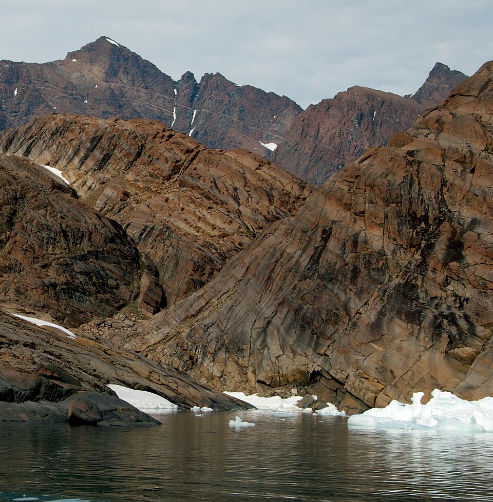
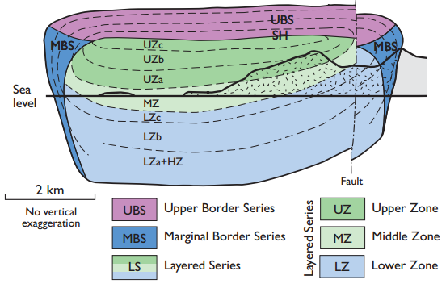
Une des conséquences de la migration et de la différenciation magmatique : le dégazage
Explications
- la différenciation magmatique concentre généralement les éléments volatils (comme H₂O, CO₂ et SO₂) dans le liquide
- la solubilité de nombreux volatils diminue lorsque la pression baisse
- la pression baisse naturellement lors de la migration des magmas vers la surface, ce qui favorise leur dégazage et la formation de bulles
- la différenciation magmatique forme des cristaux qui facilitent le dégazage (la nucléation hétérogène est thermodynamiquement beaucoup plus facile qu’une nucléation homogène sans site de nucléation)
- Impacts majeurs en volcanologie (cf. séances 11 & 12)
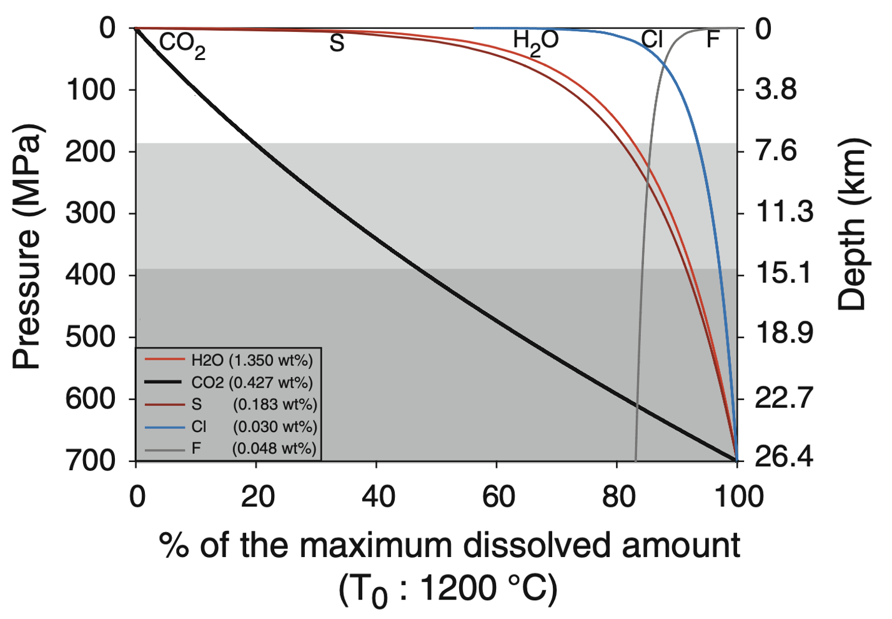
Lien vers la prochaine séance de TP : utiliser un diagramme de phase
Vocabulaire
- liquidus : au-dessus, le système est entièrement liquide ;
- solidus : au-dessous, le système est entièrement solide ;
- domaine biphasé : liquide + cristaux ;
- point eutectique (non visible dans ce système) : composition et température particulières auxquelles un liquide se transforme en plusieurs phases solides lors du refroidissement.
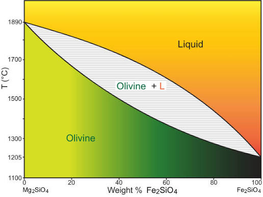
Exemple simple : cristallisation des plagioclases
Le plagioclase forme une solution solide entre un pôle calcique, l’anorthite, et un pôle sodique, l’albite
- Dans un liquide basaltique, le premier plagioclase est souvent relativement calcique (vers le pôle anorthite).
- Le liquide résiduel s’appauvrit en Ca et s’enrichit relativement en Na (vers le pôle albite).
- En équilibre, le cristal peut se rééquilibrer avec le liquide (zonation des cristaux).
- En fractionnement, le plagioclase séparé conserve une composition ancienne et le liquide évolue plus rapidement.
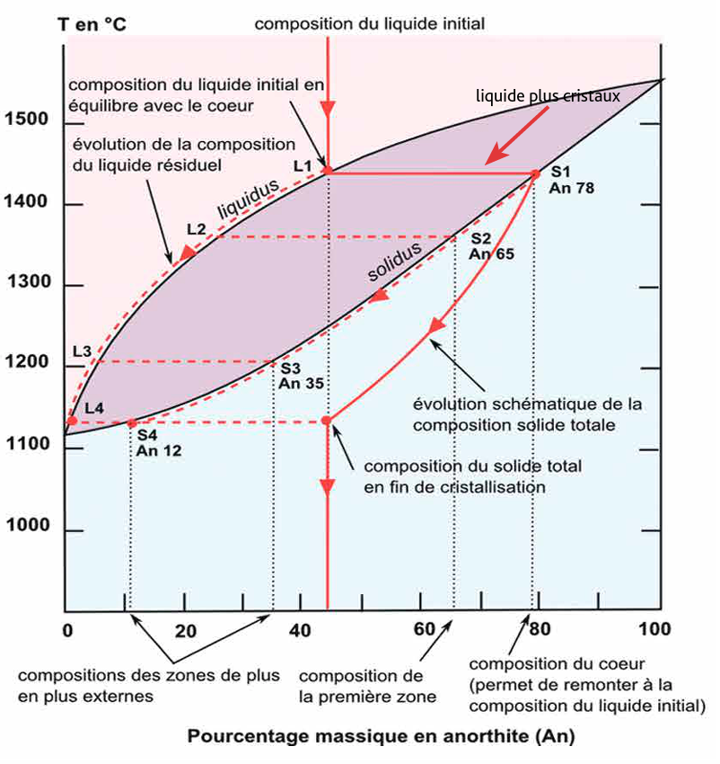
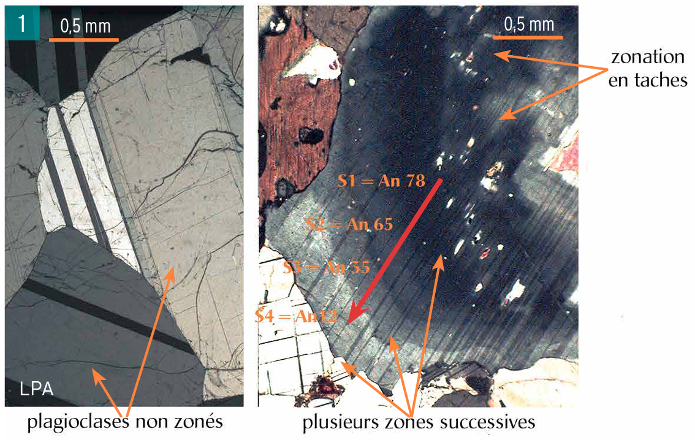
Exemple plus complexe : intercroissance du quartz et du feldspath potassique
Le quartz et le feldspath potassique sont des phases tardives pouvant former une symplectite
- Une symplectite est une intercroissance fine de deux ou plusieurs minéraux.
- Le diagramme de phase illustre le domaine dans lequel le quartz et le feldspath potassique peuvent cristalliser ensemble.
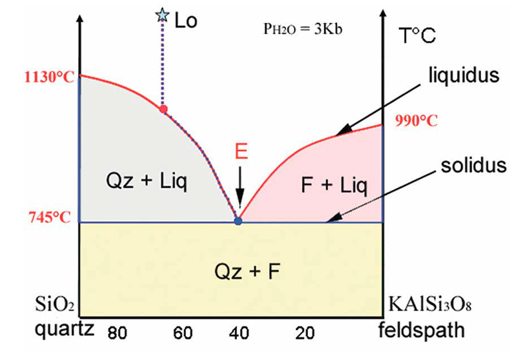
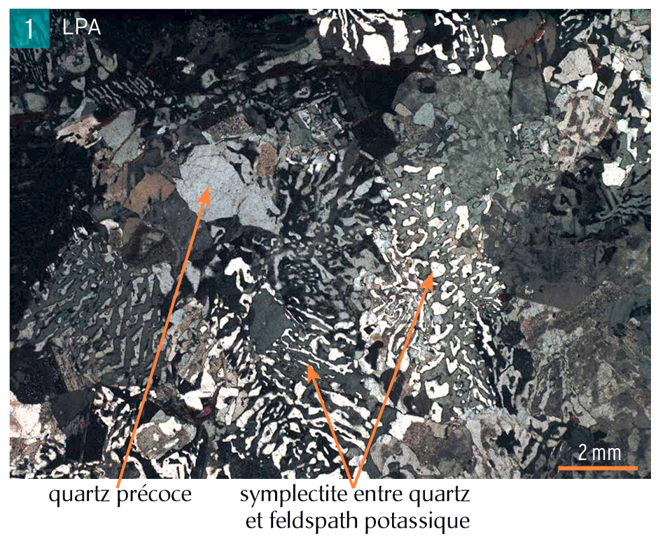
Messages à retenir
Le transport des magmas s’effectue à différentes échelles : percolation entre les grains près de la source, diapirisme dans le manteau ductile et fracturation dans la croûte.
Les magmas peuvent être stockés dans des réservoirs, des mushs, des dykes ou des sills, puis évoluer par mélange, contamination, assimilation, cristallisation fractionnée et dégazage.
Ces processus modifient progressivement la composition, la densité, la viscosité et la teneur en volatils des magmas, ce qui explique la diversité des roches plutoniques et volcaniques.
Comment les magmas évoluent-ils pendant leur transport et leur stockage ?
Plusieurs processus peuvent modifier les propriétés physico-chimiques des magmas.
Mélange des magmas : deux magmas peuvent se rencontrer et interagir. Le mingling correspond à une dispersion mécanique partielle, tandis que le mixing désigne une homogénéisation chimique plus avancée, produisant un liquide hybride.
Contamination et assimilation : le magma échange de la chaleur et de la matière avec les roches encaissantes. La contamination désigne la modification observée de sa composition, tandis que l’assimilation correspond à l’incorporation de matière encaissante.
Cristallisation fractionnée : lors de l’évolution des conditions P-T-X du magma, des cristaux et des bulles se forment puis se séparent du liquide, ce qui modifie progressivement la composition du magma résiduel. Il s’agit du mécanisme majeur de différenciation magmatique.